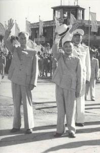

相关图片

- 


《邓小平文选》为邓小平著作、讲话选集，由中共中央文献编辑委员会编辑，人民出版社出版。至1993年，已出版3卷。
《邓小平论教育》第一版和第二版是1990年和1995年编辑出版的，分别收录了邓小平同志自1951年至1989年关于教育问题的讲话、谈话与题词38篇和53篇。《邓小平论教育》的出版，对于了解和掌握邓小平同志的教育思想，促进中国教育事业的改革与发展起到了重要作用。
官方立传2009年12月，《邓小平年谱（1904-1974）》一书由中央文献研究室编辑出版。全书以大量文献档案资料为依据，全面地反映了一代伟人邓小平的生平经历和思想历程。
2014年8月19日，经中央批准，由中共中央文献研究室编辑的《邓小平文集（1949－1974）》和撰写的《邓小平传（1904－1974）》，分别由人民出版社和中央文献出版社出版，即日起在全国发行。这是官方首次为邓小平立传。
三卷本的《文集》编入文稿406篇，80余万字，其中的大部分文稿是第一次公开发表。邓小平“文革”期间的部分文稿，首次对外披露。